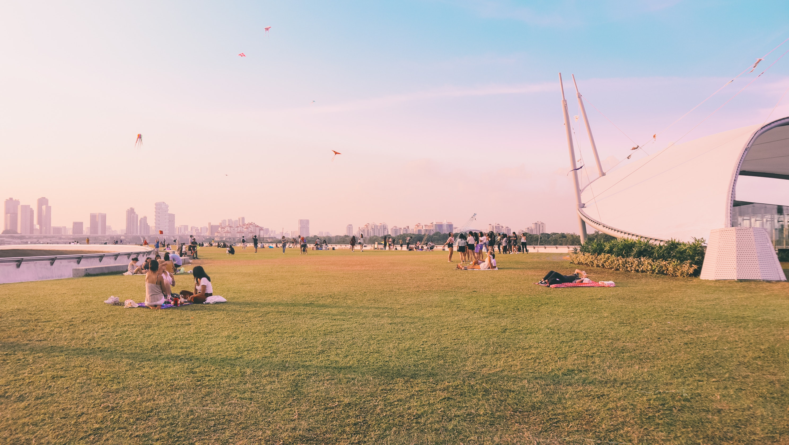
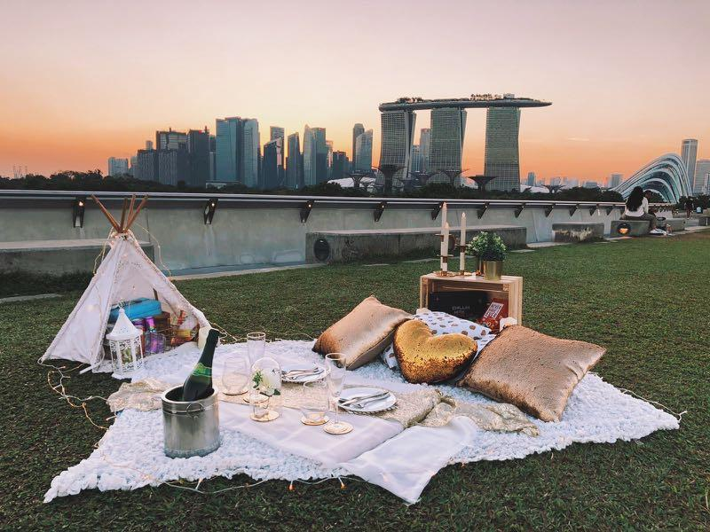
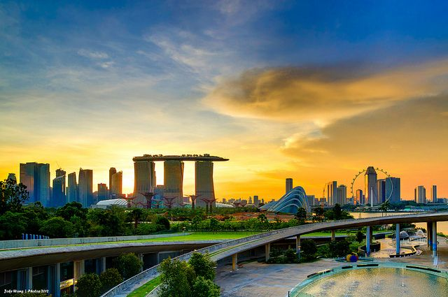

Looking for someplace to chill with a great view of Singapore? Look no further than the South of Singapore!
Marina Barrage is the vision of the late Mr Lee Kuan Yew when he envisaged damming the mouth of the Marina Channel to create a freshwater reservoir.
Summary of Page Content:
This is a clickable image of the attractions around Marina Barrage.
Marina Barrage is at the southern tip of the main island, and a short walk away from Gardens by the Bay. This multi-purpose tourist attraction is both a rooftop dam and a park. Although its primary function serves as a dam, Marina Barrage is rather popular for recreation on its green, roof-top expanse. Visitors here especially enjoy kite flying the most, since the park is held on a rooftop space.
Click on the above image to find out more about the different attractions around Marina Barrage!
The attractions include:
Marina Bay Sands, Gardens By The Bay and The Singapore Flyer
1) Kite Flying

Ever thought about a good place to fly kites in Singapore? Look no further than Marina Barrage! The large space allows for easy movement during kite flying and it is an exciting experience especially with the strong winds present in the afternoon!
2) Picnic with loved ones

Grab your loved ones and spend a day enjoying a nice picnic on the greenery of Marina Barrage!
3) Watch the Sunset

Enjoy the beautiful sunset in a great area with a beautiful scenery of Singapore in the backdrop as well!
1) Public Areas are open for 24 Hours (Except the Green Roof)
2) The Green Roof is from 8am to 9pm daily
3) Marina Barrage is a smoke free facility
For more information on frequently asked questions on Marina Barrage, click here!
1) By Car
To get to Marina Barrage, head towards Central Boulevard from AYE (East Bound) into MCE (Exit 2) or ECP/KPE (Towards City) into MCE (Exit 3). Follow the road/directional signs along Central Boulevard towards Marina Gardens Drive (right turn). Stay on Marina Gardens Drive passing by first Gardens by the Bay and Satay by the Bay on the left before reaching Marina Barrage.
2) By Bus (SBS Bus 400)
Operating Hours: 0700hrs to 2330hrs (Frequency of 15-20 mins)
From Tanjong Pagar Station: Take bus 400 in front of International Plaza (03223)
From Marina Bay Station and Downtown Station: Take bus 400 at Marina Bay Financial Centre (03391) along Marina Boulevard.
For more information on bus schedules, click here!
Thank you for reading this guide on Marina Barrage as a tourist destination! If you would like to find out even more, please email the author here with your questions!
Click here to drop me an email!!!